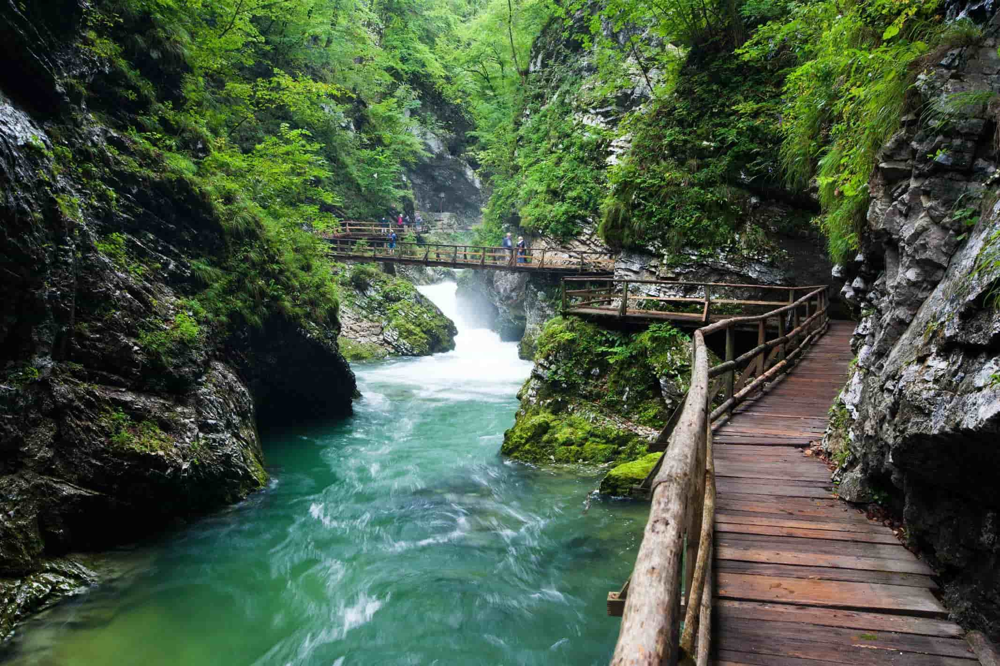
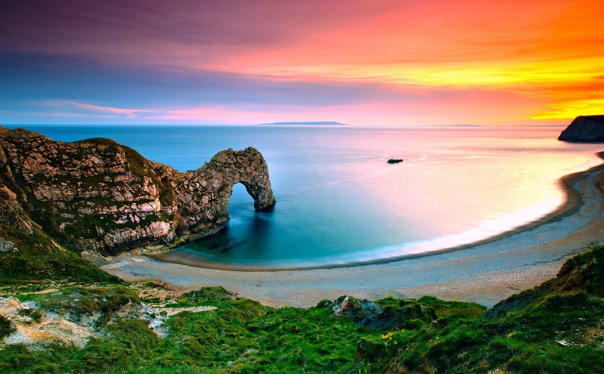
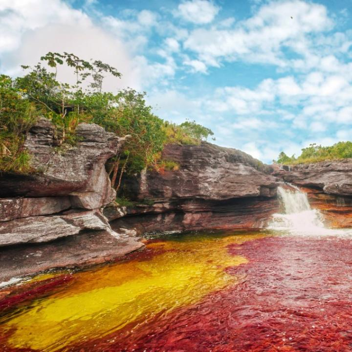

Las estribaciones de la Sierra Nevada de Santa Marta, la montaña costera más alta del mundo, se hunden en el mar como los dedos de una mano gigantesca entre los que se forman bahías y ensenadas de belleza singular: Chengue, Gayraca, Cinto, Neguanje, Concha, Guachaquita.
Con sus playas de arenas blancas delimitadas por, manglares, matorrales o bosques, y bañadas todas por las aguas cristalinas del mar Caribe, hacen parte de los muchos atractivos que ofrece el Parque Nacional Natural Tayrona. Para quienes buscan la contemplación y el descanso, el Parque ofrece magníficas playas y el relajante panorama de un mar intensamente azul. Quienes se sienten atraídos por actividades más emocionantes podrán disfrutar de caminatas, careteo y buceo autónomo. El parque Tayrona tiene también vestigios arqueológicos de una antigua ciudad del pueblo Tayrona.
Que llevar
Ingeniero Electronico amante de los viajes, me inspira el mundo y mis emprendimientos buscan hacer de los viajes algo más auténtico para mí y los demás.